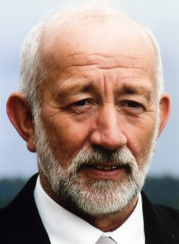

Bjørn Arne Laugen
M, #206, f. 29 april 1940, d. 14 juli 1975
Foreldre
Familie: Solveig Helen Wahl (f. 6 februar 1945)
| Sønn | Robert Laugen (f. 13 mars 1966) |
| Datter | Sigrid Heidi Laugen+ (f. 10 oktober 1968) |
| Datter | Anette Laugen+ (f. 21 april 1975) |
Biografi
Bjørn Arne Laugen ble født den 29 april 1940 på/i Nærøy, Nord-Trøndelag. Han giftet seg med Solveig Helen Wahl den 31 desember 1966 på/i Nærøy Prestekontor, Nærøy, Nord-Trøndelag.

Han døde ved drukning i Valvatnet den 14 juli 1975 på/i Nærøy, Nord-Trøndelag. Han ble gravlagt den 16 juli 1975 på/i Lundring kirkegård, Nærøy, Nord-Trøndelag.
| Sist redigert |
18 august 2024 10:37:02 |
| Slektskap | 6-menning til Håkon Wahl |
Trygve Einride Laugen
M, #210, f. 24 april 1942, d. 12 mars 2009
Foreldre
Familie: Solveig Helen Wahl (f. 6 februar 1945)
| Datter | Tora Beathe Laugen+ (f. 14 februar 1980) |

Trygve Laugen
Biografi
Trygve Einride Laugen ble født den 24 april 1942 på/i Nærøy, Nord-Trøndelag. Han giftet seg med Solveig Helen Wahl den 4 november 1978 på/i Lundring kirke, Nærøy, Nord-Trøndelag
+.
Han døde av av kreft den 12 mars 2009 på/i Storval, Nærøy, Nord-Trøndelag. Han ble gravlagt den 20 mars 2009 på/i Lundring kirke, Nærøy, Nord-Trøndelag
+.
Trygve Einride Laugen ble konfirmert den 7 juli 1957 på/i Lundring kirke, Nærøy, Nord-Trøndelag
+.
| Sist redigert |
16 mars 2025 11:09:00 |
| Slektskap | 9-menning til Håkon Wahl |
Torstein Torbergsen Horvereid
M, #216, f. omtrent 1719, d. omtrent 1792
Foreldre
Biografi
Torstein Torbergsen Horvereid ble født omtrent 1719 på/i Horvereid; Kolvereid, Nærøy, Nord-Trøndelag. Han giftet seg med
Ellen Eriksdatter i 1749. Han døde omtrent 1792 på/i Nærøy, Nord-Trøndelag.
Torstein Torbergsen Horvereid brukte i 1750 Horven gnr 35 - løpenr. 300, Horvereid; Kolvereid, Nærøy, Nord-Trøndelag.
| Sist redigert |
18 april 2010 00:00:00 |
| Slektskap | 4. tippoldefar til Håkon Wahl |
Ingeborg Anna Olsdatter Setter
K, #217, f. 19 mars 1826, d. 23 mai 1907
Foreldre
Biografi
Ingeborg Anna Olsdatter Setter ble født den 19 mars 1826 på/i Setter, Namdalseid, Nord-Trøndelag. Hun giftet seg med
Johannes Henriksen Melgaard den 16 juni 1853 på/i Nærøy, Nord-Trøndelag. Hun døde den 23 mai 1907 på/i Nakling; Kolvereid, Nærøy, Nord-Trøndelag. Hun ble gravlagt den 3 juni 1907 på/i Kolvereid kirkegård, Nærøy, Nord-Trøndelag.
Ingeborg Anna Olsdatter Setter was also known as Ingeborg Anna Melgaard. Hun was also known as Ingeborg Anna Nakling. Hun ble døpt den 15 mai 1826 på/i Namdalseid, Nord-Trøndelag. Hun flyttet til Synnes; Kolvereid, Nærøy, Nord-Trøndelag, i 1838. Sammen med foreldre og søsken. Hun flyttet til Lillevea, løpenummer 346, Lillevea, Nærøy, Nord-Trøndelag, i 1839. Sammen med foreldrene. Hun ble konfirmert den 15 august 1841 på/i Nærøy, Nord-Trøndelag.
| Sist redigert |
21 juli 2022 22:27:49 |
| Slektskap | Tippoldemor til Håkon Wahl |
Johannes Henriksen Melgaard
M, #218, f. 7 desember 1819, d. 31 januar 1895
Foreldre
Biografi
Johannes Henriksen Melgaard ble født den 7 desember 1819 på/i Storvea, Nærøy, Nord-Trøndelag. Han giftet seg med
Ingeborg Anna Olsdatter Setter den 16 juni 1853 på/i Nærøy, Nord-Trøndelag. Han døde den 31 januar 1895 på/i Kolvereid, Nærøy, Nord-Trøndelag. Han ble gravlagt den 19 februar 1895 på/i Kolvereid kirkegård, Nærøy, Nord-Trøndelag.
Johannes Henriksen Melgaard was also known as Johannes Nakling. Han ble konfirmert den 24 august 1834 på/i Kolvereid, Nord-Trøndelag. Han bygslet i 1855 Nakling 28/1, Nakling; Kolvereid, Nærøy, Nord-Trøndelag, av Sverdrup. Matrikkelkommisjonen noterte i 1865 om gården: 18 ½ mål dyrka innmark. Sand- og leirjord. 34 ½ mål natureng. 12 lass høy av utslått. 4 mål dyrkbar jord. Bra hamning. Skog til brensel, ikke til salgs. Gården ligger ¼ mil fra sjøen. Middels lettbrukt. Alminnelig godt dyrka. Utsæd: ¾ t (tønner). bygg, 3 ½ t. havre, 3 t. poteter. Buskap: 1 hest, 4 storfe, 12 sauer, 1 gris. Han ble jordfestet den 12 mai 1895 Kolvereid kirke, Nærøy, Nord-Trøndelag.
| Sist redigert |
21 august 2022 22:49:18 |
| Slektskap | Tippoldefar til Håkon Wahl |
Marie Kristine Johannesdatter Nakling
K, #219, f. 26 juni 1860, d. 1 juli 1938
Foreldre
Biografi
Marie Kristine Johannesdatter Nakling ble født den 26 juni 1860 på/i Kolvereid, Nærøy, Nord-Trøndelag. Hun giftet seg med
Ole Jensen Volden den 30 juni 1893 på/i Kolvereid kirke, Nærøy, Nord-Trøndelag. Hun døde den 1 juli 1938 på/i Nærøy, Nord-Trøndelag. Hun ble gravlagt den 7 juli 1938 på/i Kolvereid kirkegård, Nærøy, Nord-Trøndelag.
Marie Kristine Johannesdatter Nakling was also known as Marie Kristine Volden. Hun ble døpt den 5 august 1860 på/i Kolvereid kirke, Nærøy, Nord-Trøndelag. Hun ble konfirmert den 4 juli 1875 på/i Kolvereid kirke, Nærøy, Nord-Trøndelag.
| Sist redigert |
16 august 2022 22:18:30 |
| Slektskap | Oldemor til Håkon Wahl |
Ole Jensen Volden
M, #220, f. 20 juli 1872, d. 3 februar 1945
Foreldre
Biografi
Ole Jensen Volden ble født utenfor ekteskap den 20 juli 1872 Kolvereid, Nærøy, Nord-Trøndelag. Han giftet seg med
Marie Kristine Johannesdatter Nakling den 30 juni 1893 på/i Kolvereid kirke, Nærøy, Nord-Trøndelag. Han døde den 3 februar 1945 på/i Nærøy, Nord-Trøndelag. Han ble gravlagt den 13 februar 1945 på/i Kolvereid kirkegård, Nærøy, Nord-Trøndelag.
Ole Jensen Volden ble døpt den 8 september 1872 på/i Kolvereid kirke, Nærøy, Nord-Trøndelag. Han ble konfirmert den 14 juli 1888 på/i Kolvereid kirke, Nærøy, Nord-Trøndelag. Han og
Johan Adolf Jensen Volden brukte omtrent 1900 Vollen 26/1, Horvereid; Kolvereid, Nærøy, Nord-Trøndelag.
| Sist redigert |
21 januar 2025 23:42:19 |
| Slektskap | Oldefar til Håkon Wahl |
Julie Dorthea Volden
K, #221, f. 23 oktober 1893, d. 16 juli 1923
Foreldre
Biografi
Julie Dorthea Volden ble født den 23 oktober 1893 på/i Kolvereid, Nærøy, Nord-Trøndelag. Hun døde av tæring den 16 juli 1923 på/i Horvereid, Horvereid; Kolvereid, Nærøy, Nord-Trøndelag. Hun ble gravlagt den 24 juli 1923 på/i Kolvereid kirkegård, Nærøy, Nord-Trøndelag.
Julie Dorthea Volden ble døpt den 14 januar 1894 på/i Kolvereid kirke, Nærøy, Nord-Trøndelag.
| Sist redigert |
14 juli 2022 23:56:58 |
| Slektskap | Grandtante til Håkon Wahl |
Jakob Ingolf Volden
M, #222, f. 23 september 1894, d. 29 mai 1973
Foreldre
| Datter | Anne Dorthea Volden+ (f. 14 april 1930, d. 22 november 1989) |
| Datter | Inger Volden+ (f. 9 juni 1931, d. 24 februar 2021) |
| Sønn | Tore Volden+ (f. 1 juni 1932, d. 14 juli 2002) |
| Datter | Bjørg Volden+ (f. 23 januar 1938, d. 15 mars 2020) |
| Datter | Randi Volden+ (f. 11 november 1940) |
| Datter | Gunnhild Volden+ (f. 22 september 1943) |
| Datter | Torgunn Volden+ (f. 20 april 1947) |
Biografi
Jakob Ingolf Volden ble født den 23 september 1894 på/i Horvereid; Kolvereid, Nærøy, Nord-Trøndelag. Han giftet seg med
Aasta Arnesdatter Strøm den 26 oktober 1929 på/i Kolvereid kirke, Nærøy, Nord-Trøndelag. Han døde den 29 mai 1973 på/i Nærøy, Nord-Trøndelag. Han ble gravlagt den 4 juni 1973 på/i Kolvereid kirkegård, Nærøy, Nord-Trøndelag.
Jakob Ingolf Volden ble døpt den 11 november 1894 på/i Kolvereid kirke, Nærøy, Nord-Trøndelag. Han ble konfirmert den 18 juli 1909 på/i Kolvereid kirke, Nærøy, Nord-Trøndelag.
| Sist redigert |
30 desember 2015 00:00:00 |
| Slektskap | Grandonkel til Håkon Wahl |
Thoralf Olsen Volden
M, #223, f. 26 januar 1896, d. 9 november 1967
Foreldre
| Sønn | Elmer Francis Volden+ (f. 9 februar 1930, d. 24 april 1986) |
| Datter | Marie Eline Volden (f. 25 desember 1931) |
| Sønn | David Volden (f. 27 september 1936) |
| Sønn | Paul Volden (f. 7 april 1949, d. 5 mars 2011) |
Biografi
Thoralf Olsen Volden ble født den 26 januar 1896 på/i Horvereid; Kolvereid, Nærøy, Nord-Trøndelag. Han giftet seg med
Florence Evangeline Juul den 24 desember 1928 på/i Canton, South Dakota, USA. Han døde den 9 november 1967 på/i USA. Han ble gravlagt på/i Canton Lutheran Cemtery, Canton, Lincoln, South Dakota, USA.
Thoralf Olsen Volden was also known as Torolf Olsen Volden. Han ble døpt den 3 mai 1896 på/i Kolvereid, Nærøy, Nord-Trøndelag. Han ble konfirmert den 9 juli 1911 på/i Kolvereid kirke, Nærøy, Nord-Trøndelag. Han immigrerte til USA.
| Sist redigert |
20 august 2022 20:28:43 |
| Slektskap | Grandonkel til Håkon Wahl |
Olga Marie Olsdatter Volden
K, #224, f. 9 oktober 1898, d. 2 november 1968
Foreldre
Biografi
Olga Marie Olsdatter Volden ble født den 9 oktober 1898 på/i Horvereid; Kolvereid, Nærøy, Nord-Trøndelag. Hun giftet seg med
Bjarne Gullow Wannebo i 1923 på/i Kolvereid kirke, Nærøy, Nord-Trøndelag. Hun døde den 2 november 1968. Hun ble gravlagt den 8 november 1968 på/i Kolvereid kirkegård, Nærøy, Nord-Trøndelag.
Olga Marie Olsdatter Volden was also known as Olga Marie Wannebo. Hun ble døpt hjemme den 11 oktober 1898 Horvereid; Kolvereid, Nærøy, Nord-Trøndelag. Hun ble døpt den 8 januar 1899 på/i Kolvereid kirke, Nærøy, Nord-Trøndelag. Hun ble konfirmert den 6 juli 1913 på/i Kolvereid kirke, Nærøy, Nord-Trøndelag.
| Sist redigert |
2 januar 2016 00:00:00 |
| Slektskap | Grandtante til Håkon Wahl |
Ragna Volden
K, #225, f. 5 august 1901, d. 10 april 1960
Foreldre
| Datter | Margit Petra Sandnesaunet+ (f. 27 april 1936) |
| Sønn | Anton Olav Sandnesaunet+ (f. 7 juni 1937) |
| Datter | Rannveig Petrine Pettersdatter Sandnesaunet+ (f. 16 juli 1941) |
| Datter | Vigdis Johanne Sandnesaunet+ (f. 6 januar 1947) |
Biografi
Ragna Volden ble født den 5 august 1901 på/i Horvereid; Kolvereid, Nærøy, Nord-Trøndelag. Hun giftet seg med
Petter Antoni Sandnesaunet den 6 januar 1936 på/i Nærøy, Nord-Trøndelag. Hun døde den 10 april 1960 på/i Nærøy, Nord-Trøndelag. Hun ble gravlagt den 16 april 1960 på/i Lundring kirkegård, Nærøy, Nord-Trøndelag.
Ragna Volden was also known as Ragna Sandnesaunet. Hun ble døpt den 27 oktober 1901 på/i Kolvereid kirke, Nærøy, Nord-Trøndelag. Hun ble konfirmert den 9 juli 1916 på/i Kolvereid kirke, Nærøy, Nord-Trøndelag.
| Sist redigert |
31 oktober 2020 00:00:00 |
| Slektskap | Grandtante til Håkon Wahl |
{kind=link}